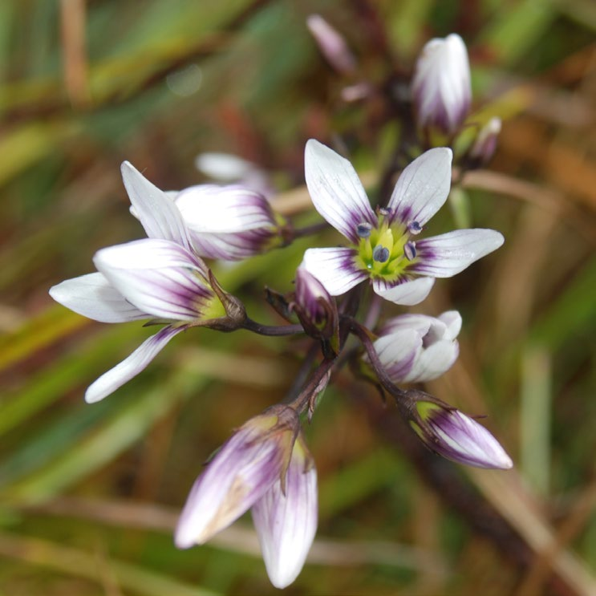
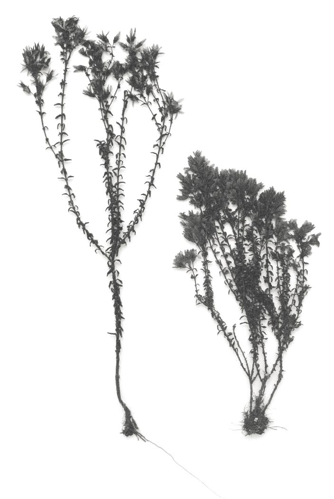
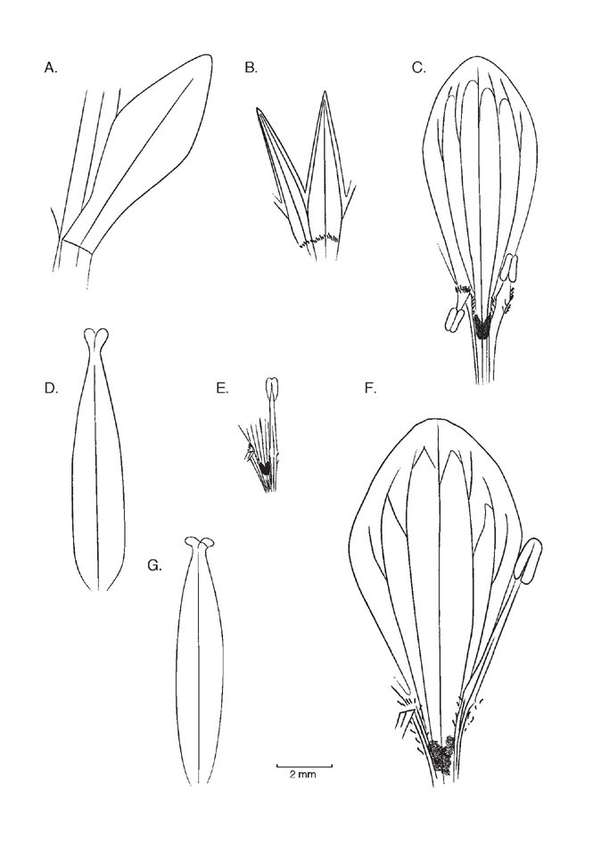
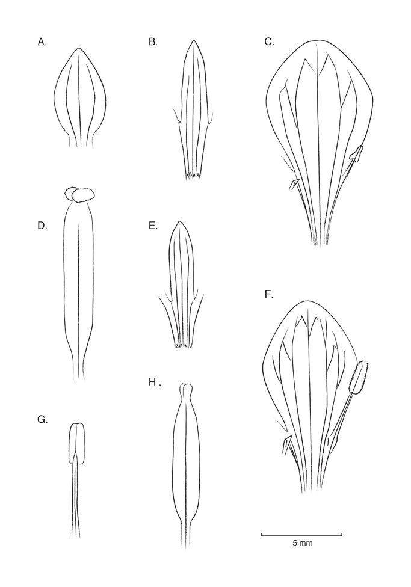

Resumen Gentianella quipuscoana , una nueva especie del Perú, la cual se describe aquí, es aparentemente ginodioica. De los especímenes vistos en este estudio, las flores de unos eran solamente pistiladas y las de otros eran bisexuales. En G. dacrydioides , del sur de Ecuador, las flores de algunas plantas son bisexuales, mientras que de otras son unisexualmente pistiladas, lo que indica que la especie también es ginodioica. Palabras clave: Colombia, Ecuador, Gentianaceae, Gentianella , ginodioecia, Perú. Abstract Gentianella quipuscoana , a new species from Peru described here, appears to be gynodioecious. Of the specimens seen in this study, some bore pistillate flowers only and others bore bisexual flowers. In G. dacrydioides , of southern Ecuador, the flowers of some plants are bisexual and those of other plants are unisexually pistillate, indicating that this species likewise is gynodioecious. Keywords: Colombia, Ecuador, Gentianaceae, Gentianella , gynodioecy, Peru.
Full text
Full text is available as a scanned copy of the original print version.
Get a printable copy (PDF file) of the
complete article, or click on a page image below to browse page by page.
Links are also available for
Selected References.
Images in this article

Fig. 1 Gentianella quipuscoana en Dpto. San Martín, Perú. Fotografiada por Blanca León.

Fig. 2 Gentianella quipuscoana, ejemplares de herbario, ilustrando variabilidad en el hábito.

Fig. 3 Gentianella quipuscoana. A. Hoja mediocaulinare. B. Parte del cáliz. C. Parte de la corola de una flor pistilada, con estaminodios del tamaño predominante. D. Pistilo funcional, de la misma flor. E. Estaminodio más largo, con antera estéril. F. Parte de la corola de una flor bisexual, con un estambre fértil. G. Pistilo funcional de una flor bisexual. Todas vistas adaxiales. Dibujadas de Sagastegui A. et al. 16366, HAM (A-D), Quipuscoa S. et al. 2600, HAM (E), y León & Young 5134, HAM (F-G).

Fig. 4 Gentianella dacrydioides. A-D. De una planta de flores unisexualmente pistiladas. A. Hoja mediocaulinare. B. Parte del cáliz. C. Parte de la corola con estaminodio estéril. D. Pistilo receptivo. E-H. De una planta de flores bisexuales, en la fase estaminada. E. Parte del cáliz. F. Parte de la corola con estambre fértil, con la antera deflexa. G. Estambre fértil con la antera en la posición erguida. H. Pistilo. Dibujadas de van der Werff & Gudiño 11445. HAM.